Der Ring-Nebel ist mit Ausnahme der Saturnringe vermutlich die berühmteste himmlische Ringstruktur. Die einfache, schöne Erscheinung dieses Planetarischen Nebels liegt am Blickwinkel. Von der Erde blicken wir direkt in eine tonnenförmig gebaute Gaswolke hinein, die von dem sterbenden, in der Mitte gelegenen Stern abgestoßen wurde.
Zufällige Bilder
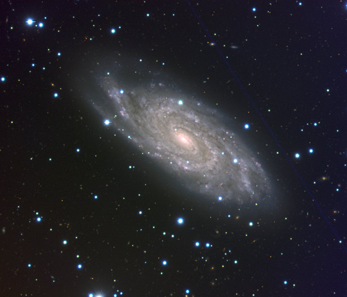
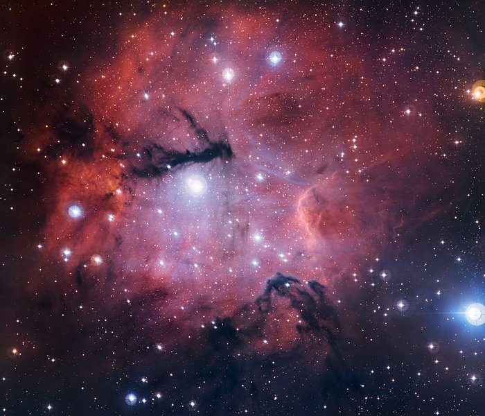
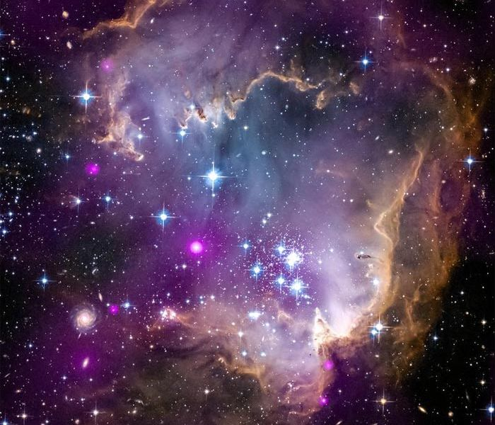
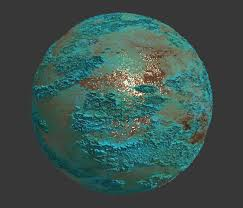
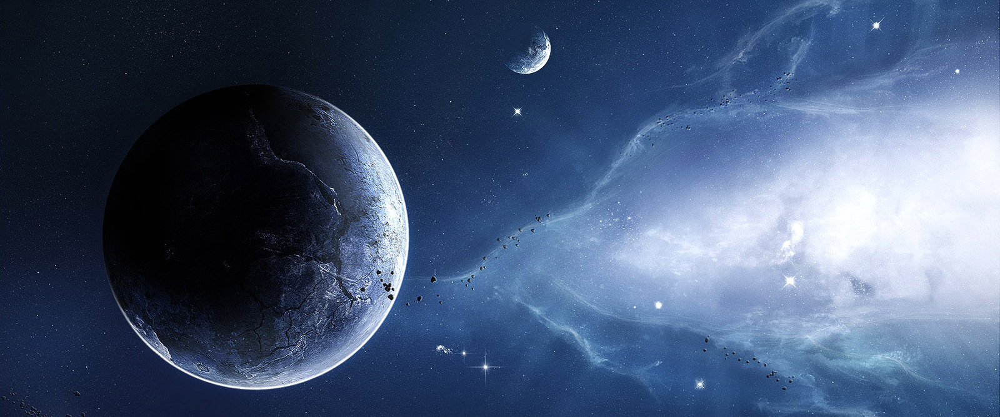
Exoplaneten
PSR B1620-26 b
Mit 13 Milliarden Jahren der Älteste Planet der gefunden wurde.
V830 Tauri b
Der aktuell jüngste bekannte Planet mit 2 Millionen Jahren.
KELT-9 b
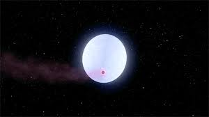
Bis zu 4327 Grad Celsius beträgt die Temperatur tagsüber auf dem heißesten Planeten.
OGLE-2005-BLG-390L b
Etwa Minus 220 Grad Celsius kalt ist es auf dem kältesten bekannten Planeten.
DENIS-P J082303.1-491201 b
Der größte bekannte Planet ist etwa 30 mal so schweer wie Jupiter.
Janssen 55 Cancri e
Dieser Planet besteht zum größten Teil aus Lava und Diamant.
Kosmischer Nebel
Wie ensteht Kosmischer Nebel?
Der Nebel besteht aus Gas und Staub, welcher das Licht von hinten aufnimmt und so sichtbar wird.
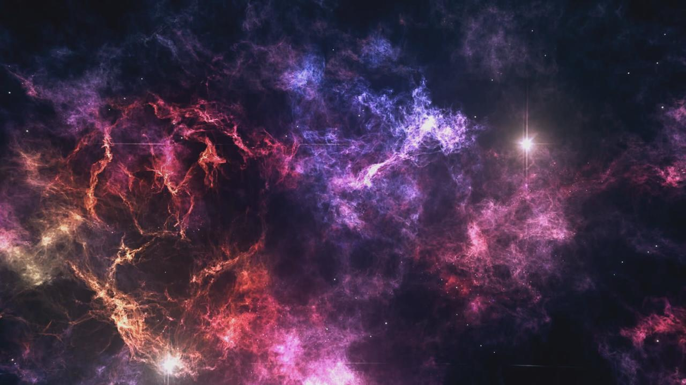
Was ist Kosmischer Nebel?
Als Nebel oder Nebelflecke wurden in der Astronomie ursprünglich alle leuchtenden flächenhaften Objekte an der Himmelskugel bezeichnet. Dazu gehörten auch Sternnebel, also Galaxien und Sternhaufen, da sie bei geringer Auflösung im Teleskop oder mit bloßem Auge als Nebelflecke erscheinen.
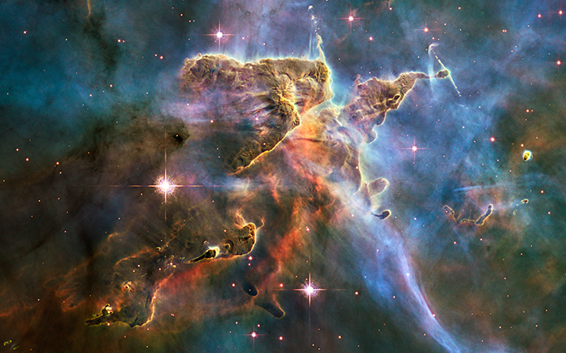
Heute wird die Bezeichnung kosmischer Nebel jedoch fast ausschließlich für interstellare Wolken aus Staub und Gas verwendet, die je nach Art ihres Leuchtens in verschiedene Kategorien eingeteilt werden: Gasnebel, die Licht emittieren oder reflektieren, und Dunkelnebel, die Licht absorbieren.
Space Technology
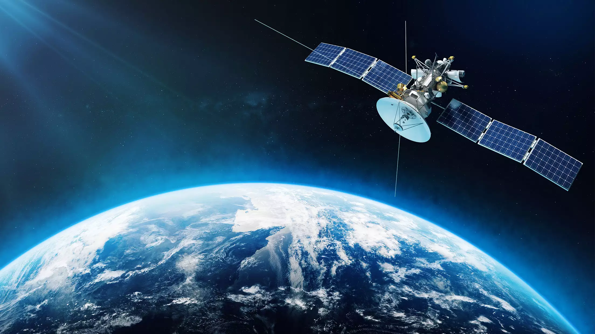
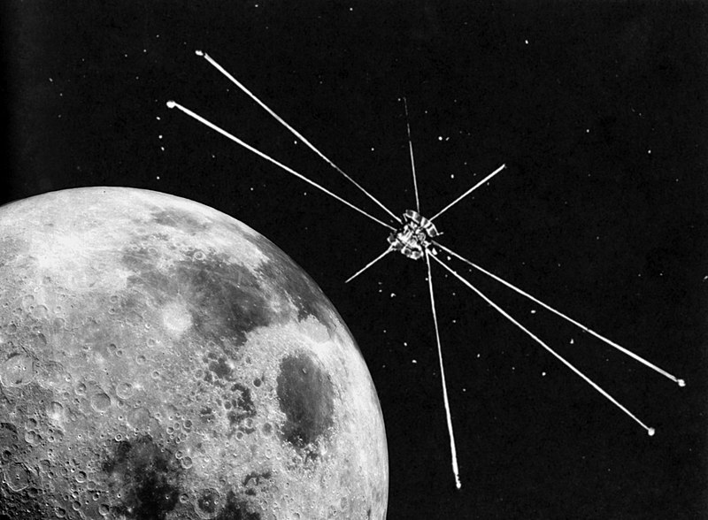
RAE-A
Die Radio Astronomy Explorer (RAE) waren zwei Raumflugkörper des Explorer-Programms, die Radioquellen im Weltraum erforschten: besonders die Sonne, die Planeten und die Galaxie. Der erste Radio Astronomy Explorer war ein Satellit und der zweite war eine Raumsonde, die den Mond umkreiste und über seiner Rückseite, ungestört von irdischen Radioemissionen, messen konnte.
RAE-A (Explorer 38) war ein Satellit, der Radiostrahlung im Frequenzbereich von 0,2 bis 20 MHz untersuchte. RAE-A wog 193 kg und war gravitationsstabilisiert. Er besaß zwei 229 m lange V-Antennen, von denen die eine zur Erde und die andere senkrecht in den Weltraum ragten. Eine weitere 36,6 m lange Dipolantenne war tangential zur Erdoberfläche ausgerichtet. Der Flugkörper wurde am 4. Juli 1968 um 17:31 Uhr UTC mit einer Delta-J-Rakete in eine fast kreisförmige rückläufige Erdumlaufbahn mit 120,6° Bahnneigung zwischen 5851 km und 5861 km Höhe gestartet.[1] RAE-A hatte vier Instrumente an Bord und verbrauchte 25 W.
GOES-16
GOES-16 (ehemals GOES-R)[2] ist ein US-amerikanischer Wettersatellit aus der GOES-Serie. Der Start erfolgte am 19. November 2016 mit einer Atlas V.[3] Nach einem Jahr Testbetrieb ging GOES-16 am 18. Dezember 2017 in den Wirkbetrieb.[4]
Der Satellit verwendet den Satellitenbus A2100 und ist für eine Lebensdauer von zehn Jahren ausgelegt. Er kann den aus seinem geostationären Orbit sichtbaren Teil der Erde alle 15 Minuten und das Kerngebiet der USA sogar alle fünf Minuten fotografieren.
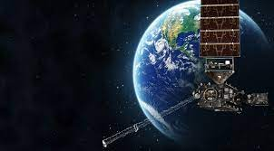
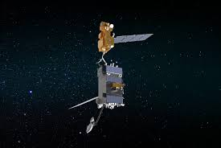
Robotic OSAM-1
10 bis 15 Jahre, so lange kann die Lebensdauer eines Satelliten sein. Meistens geht ihnen danach der Sprit aus und sie müssen in einen sicheren Orbit befördert werden, einen Weltraumfriedhof. Die Technik ist dabei oftmals noch intakt.
Die amerikanische Raumfahrtbehörde Nasa will dies ändern und plant deswegen eine mobile robotische Tankstelle im Weltraum. Mit der Mission Osam-1 (On-orbit Servicing, Assembly, and Manufacturing 1; engl. Wartung, Montage und Fertigung in der Umlaufbahn) soll die Betankung eines bestehenden Satelliten im Weltraum getestet